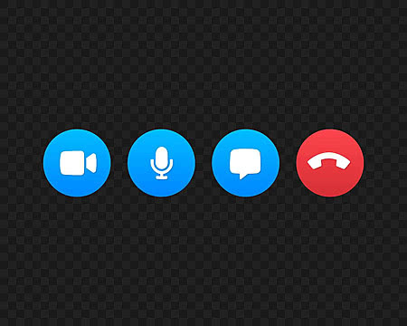

Install App
Download apps like WhatsApp, Zoom, or Google Meet.
Step 1: Open the App or Website
- Launch Zoom, Google Meet, or WhatsApp Web on your device.
- Make sure your internet connection is stable before starting.
- Check that your camera and microphone are working properly.
Make a Call
Select a contact and start a video call.
Step 2: Start or Join a Call
- Click “New Meeting” to start a call.
- To join a meeting, click “Join Meeting” and enter the meeting link or code.
- Optionally, name your meeting for easy recognition.

Tips
Ensure a stable internet connection and good lighting.
Step 3: Enable Microphone & Camera
- Turn on your microphone so others can hear you.
- Turn on your camera so others can see you.
- During the call, you can mute/unmute or hide/show your video as needed. End the call by clicking “Leave Meeting”.